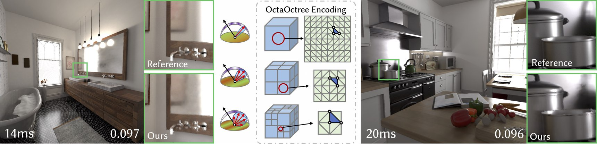

SIGGRAPH Asia 2026
OctaOctree Neural Radiosity for Real-time Glossy Material Rendering in Static Scenes
Peking University
*Corresponding author.
SIGGRAPH Asia 2026 Conference Papers (SA Conference Papers ’26), December 01–04, 2026, Kuala Lumpur, Malaysia

Video
Fast-forward
Abstract
Modeling high-frequency outgoing radiance distributions remains a fundamental challenge in global illumination, especially for glossy and specular materials. Existing neural-based radiance caching methods commonly rely on positional feature encodings or spatially organized caches, which makes it difficult to represent sharp directional radiance variations without increasing the model complexity or sampling cost.
To address this challenge, we propose OctaOctree, an efficient spatial-angular radiance representation for scene-specific global illumination in static scenes. OctaOctree organizes outgoing radiance with an adaptive octree in 3D space, with each spatial node associated with an octahedral directional map. By coupling the spatial hierarchy with direction-dependent storage, our representation exploits the capacity across 5D spatio-directional domain: fine spatial levels capture localized illumination variations, while coarser levels encode spatially coherent directional radiance patterns that can be shared across nearby locations. This design introduces a parallax-aware spatial-angular prior into the radiance representation, reducing the need for neural networks to infer high-frequency view-dependent effects solely from positional features.
As a result, OctaOctree provides an efficient yet expressive neural encoding for a wide range of indirect illumination effects, from diffuse interreflection to sharp glossy reflections. Experiments demonstrate that our method produces high-quality, direction-aware global illumination with a single network query at primary intersections, achieving improved fidelity and real-time performance compared with neural radiosity baselines and low-sample denoised path tracer.
Method
- We propose OctaOctree, a spatial-angular radiance representation that integrates an adaptive octree with octahedral directional maps for efficient outgoing radiance encoding.
- We introduce a hierarchical organization of spatial and angular resolution that exploits the complementary characteristics of the 5D spatio-directional domain, together with parallax-aware remapping to preserve direction-dependent radiance consistency for glossy transport.
- We demonstrate that this spatial-angular representation improves quality and inference efficiency for scene-specific neural radiosity, enabling high-fidelity direction-dependent global illumination with a single primary-hit query.
Training, interactive viewing, and offline rendering are released with a customized Mitsuba 3.5.2 backend.
Citation
@inproceedings{ren2026octaoctree,
author = {Ren, Jierui and Jin, Haojie and Pang, Bo and Gai, Meng and Zhu, Fei and Chen, Yisong and Li, Sheng},
title = {OctaOctree Neural Radiosity for Real-time Glossy Material Rendering in Static Scenes},
booktitle = {SIGGRAPH Asia 2026 Conference Papers},
series = {SA Conference Papers '26},
year = {2026},
location = {Kuala Lumpur, Malaysia},
isbn = {979-8-4007-2842-6},
publisher = {Association for Computing Machinery},
address = {New York, NY, USA},
numpages = {11},
doi = {10.1145/3829340.3842363},
url = {https://doi.org/10.1145/3829340.3842363}
}